vtree2
vtree2.RmdIntroduction
Quick start
Build a tree and plot it!
library(vtree2)
# example data set - same as Titanic, but with NAs
data(titanicNA)
# variables to show: Class and Survived
vt <- vtree(titanicNA, Class, Survived)
plot(vt, legend = TRUE)
plot(vt, layout = "proportional")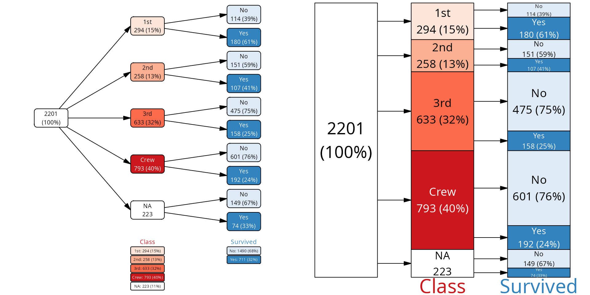
What are vtrees?
FP / NPV example
Imagine a disease and a test that we have for that disease. How good is the test?
We can consider how often the test makes an error for an infected subject, incorrectly giving the negative result. This is called a false negative (FN). The probability of this error is called false negative rate (FNR), and its compliment the sensitivity: the more sensitive our test is, the less likely that a test result will be negative if the person is sick. Let’s assume that our test is highly sensitive, for example that the FNR is 2% (making sensitivity 98%).
Another type of the error is if we have a healthy subject, but the test is showing as positive. This value is the number of false positives (FP) divided by the total number of healthy people, also known as FPR - false positive rate. The complement of this value () is called specificity. Say, we have an outstanding test and the specificity is 98%, so the false positive rate is 2%.
OK, but there is more to the story. Whether a positive test result corresponds to a real patient or a false positive depends on how likely is that the person is actually healthy in reality. This is disease prevalence, how often the disease is encountered when people are tested. Say, that the disease is quite common, and the prevalence is 2%.
From this, assuming we performed screening tests on 5^{4} persons in a population, we get the following table:
| Status | Test | N |
|---|---|---|
| Infected | Positive | 980 |
| Infected | Negative | 20 |
| Healthy | Positive | 980 |
| Healthy | Negative | 48020 |
Here is how we can build our data:
FPR <- .02 # p that healthy is positive
FNR <- .02 # p that infected is negative
prevalence <- 1/50
N <- 50000
data <- tribble(
~ Status, ~ Test, ~ N,
"Infected", "Positive", round(prevalence * N * (1-FNR)),
"Infected", "Negative", round(prevalence * N * FNR),
"Healthy", "Positive", round((1 - prevalence) * N * FNR),
"Healthy", "Negative", round((1 - prevalence) * N * (1 - FNR))
)We can visualize this table as a vtree. Since it is a frequency
table, we need to use the vtree_from_freqtable() function1. For
starters, we will show the Status first, and then the Test result. This
will show us how many of the healthy persons were incorrectly classified
as positive, and how many of the infected persons were incorrectly
classified as negative.
vt <- vtree_from_freqtable(data,
Status, Test,
.freq_col = "N")
plot(vt)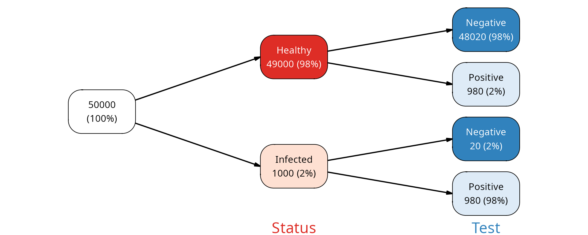
As you can see, the percentages on the leaf nodes (right side of the plot) correspond to our FPR and FNR values. The percentages on the internal nodes correspond to the disease prevalence.
What if we were to inverse this question? What is the fraction of healthy people among those who tested positive, and vice versa - what is the fraction of infected people among those who tested negative?
vt2 <- vtree_from_freqtable(data,
Test, Status,
.freq_col = "N")
plot(vt2)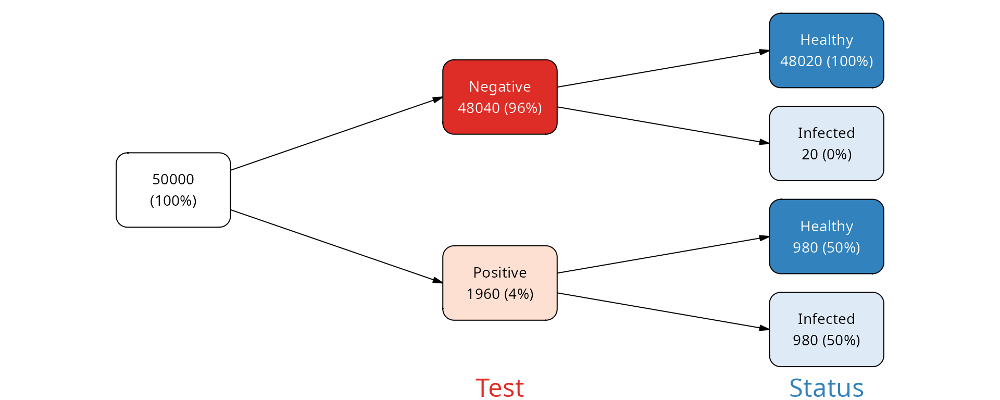
We see that among those who were tested negative, the large majority (practically 100%) were indeed healthy. This is the negative predictive value (NPV) of the test.
However, among those who were tested positive, only 50% were actually infected. This is the positive predictive value (PPV) of the test and it shows that despite the test being very specific and sensitive, when a person has a positive test result, there is more than a 50% chance that the person is actually healthy.
Vtree workflow
In vtree2, the workflow is split into several steps:
- Prepare the data (outside of
vtree2) - Build the vtree object with
vtree()orvtree_from_freqtable() - (Optional) Prune, retain or select nodes with
prune(),retain()and friends. - (Optional) Create summaries with
summary_vt(). - (Optional) Add or modify labels with
add_labels()andmutate(). - (Optional) Add or modify colors with
add_palette()andmutate(). - Plot the vtree with
plot().
Here is an example demonstrating all these steps based on the
titanicNA data set. This data set is the same as the
Titanic data set, but with some missing values randomly added for
demonstration purposes.
data(titanicNA)
vtree(titanicNA, Class, Sex, Survived) |>
# only retain the third class passengers
retain(path == "Class:3rd") |>
# add default labels
add_labels() |>
# change the labels for the missing values
mutate(label = gsub("NA", "Missing", label)) |>
# add colors
add_palette(palettes = c("Greys", "Blues", "Purples"),
na_fill = "grey90") |>
# change the color for Females who survived
# mark() is a helper function that returns TRUE for the nodes that
# match the given condition
mark(path == "Class:3rd/Sex:Female/Survived:Yes") |>
mutate(fill = ifelse(mark, "red", fill)) |>
mutate(color = ifelse(mark, "white", color)) |>
# plotting with legend and custom margins
plot(legend = TRUE,
margins = c(0.05, 0.05, 0.25, 0.05))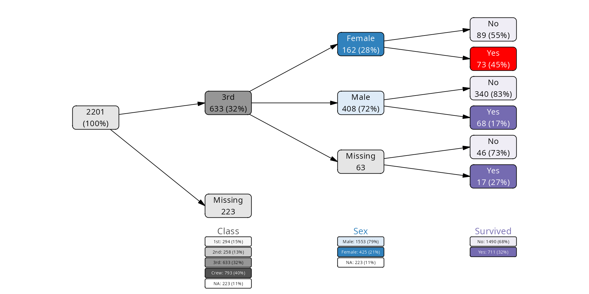
Manual
Creating layouts
Layouts will be automatically created by plot() if they
are missing. The parameters passed to the plot give some basic control
over the layout: dir determines the direction of the tree,
show_root determines whether the root node is shown, and
lwidth/lheight determine the width and height
of the nodes relative to the available space.
vt <- vtree_from_freqtable(Titanic, Class, Survived)
p1 <- plot(vt)
p2 <- plot(vt, dir = "tb", show_root = FALSE, lwidth = 0.8, lheight = 0.3)
plot_grid(p1, p2, nrow = 1)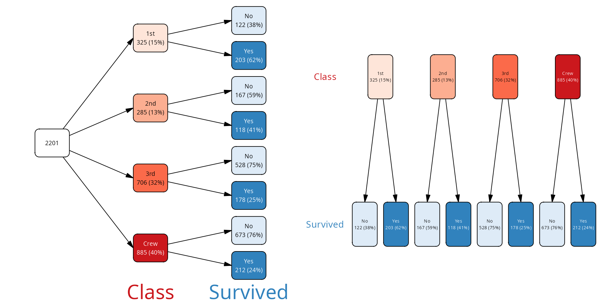
The plot() function simply calls
add_layout() to add the layout to the vtree object with the
specified parameters. Alternatively, you can call the function
add_layout() directly on the vtree object. The resulting
vtree contains the additional columns x, y,
width and height for the nodes and
x1, y1, x2, y2 for
the edges. You can then modify these columns directly.
In the following example we will modify a layout with pruned nodes. We will move the nodes on the right (leafs) hand up a bit upwards.
vt <- vtree_from_freqtable(Titanic, Class, Survived) |>
prune(Class %in% c("1st", "2nd"), follow_only = TRUE) |>
add_layout() |>
mutate(y = ifelse(leaf, y + height/2, y))
# we need to modify the edges as well, but for that we need information
# from the nodes
nodes <- as_tibble(vt)
vt <- mutate(vt, x1 = nodes$x[from], y1 = nodes$y[from],
x2 = nodes$x[to] - nodes$width[to]/2, y2 = nodes$y[to],
.edges = TRUE)
plot(vt)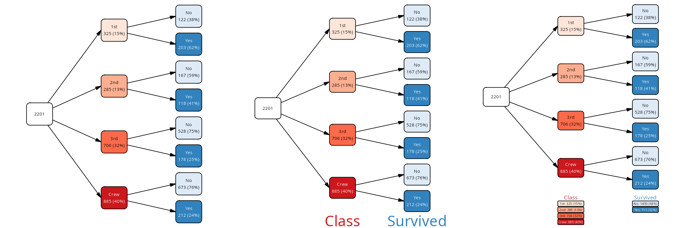
Note how we mutate the edges with the .edge = TRUE
argument. This is different from tidygraph, where the
object (tree) can either be in activated “node” or “edge” mode. In
vtree2, the object is always in “node” mode (because it is
more practical), but on the rare occassion that you need to access the
edges, you can.
The add_layout() function has additional parameters:
varspace and varsize. These can assign the
amount of relative space available to the node depending on the variable
it is associated with. For example, we might want to show a long summary
which takes a lot of space for the leafs, but only short labels for the
internal nodes. You can tune the relative node sizes with these two
parameters.
cases <- cases_from_freqtable(Titanic)
sm <- summary_vt(cases, vt, Age)
vt <- vtree(cases, Class, Sex, Survived) |>
prune(Class == "Crew") |>
add_labels() |>
mutate(label = ifelse(leaf, paste0(label, "\n", sm), label)) |>
add_layout(dir="tb", lheight=.8,
varspace=c(root=1, Class=1,Sex=1,Survived=4))
plot(vt, var_labels = FALSE)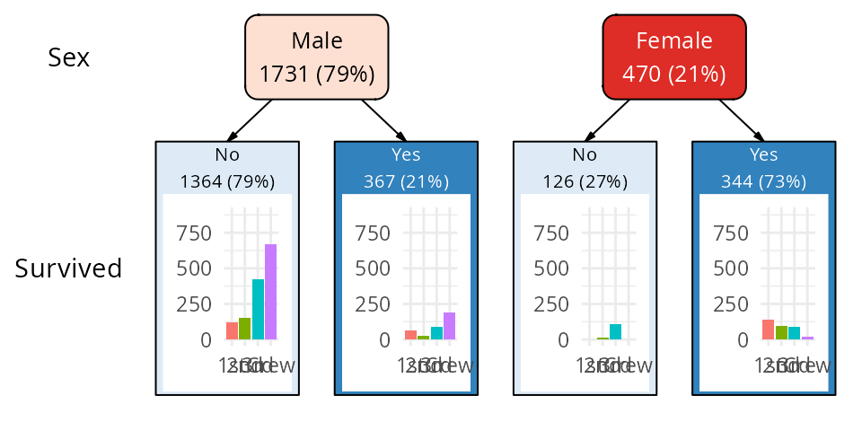
Adding and modifying labels
Labels to be plotted are taken from the label column of
the vtree object. If this column is missing, plot() calls
add_labels() to add default labels. For custom labels there
are three routes:
- directly add a label column to the vtree object with
mutate() - use
add_labels()with a custom format - first use
add_labels(), then modify the label column withmutate()
Directly creating a label column with mutate()
Since the mutate() function is called in the context of
the vtree node data frame, you can use any of the columns of the vtree
object directly. For example, you can show the node_key
column, a unique identifier for each node.
Using add_labels() to add default or custom labels
The add_labels() function can produce two types of
default labels: “simple” and “long”, chosen through the
template argument:
vt <- vtree(titanicNA, Class)
p1 <- add_labels(vt) |> plot() # template = "simple"
p2 <- add_labels(vt, template = "long") |> plot()
plot_grid(p1, p2, nrow = 1)
These labels are derived directly from columns of the vtree object:
node_name, node_val, freq and
n. When vtree object is created, the node_name
and node_col are identical. However, the latter may not be
changed because it is important for operations such as pruning. However,
you can freely modify node_name, for example specifying a
more user-friendly variable name to be used by
add_labels().
Using column and value aliases
If you prefer to see a different name for the variable or its values
on the plot, you can specify an alias for either using the
col_alias and val_alias arguments of
add_labels(). Not all variables or all levels (values) need
to be specified, only those you want to change:
col_alias <- list(Class = "Passenger\nClass",
Sex = "Gender",
Age = "Age\nGroup",
Survived = "Survival\nStatus")
val_alias <- list(NAs = "Missing",
Class = c("1st" = "First",
"2nd" = "Second",
"3rd" = "Third"))
vtree(titanicNA, Class, Survived) |>
add_labels(col_alias = col_alias,
val_alias = val_alias) |>
plot(legend = TRUE, dir="tb", show_root = FALSE,
margins = c(0.05, 0.05, 0.05, 0.10))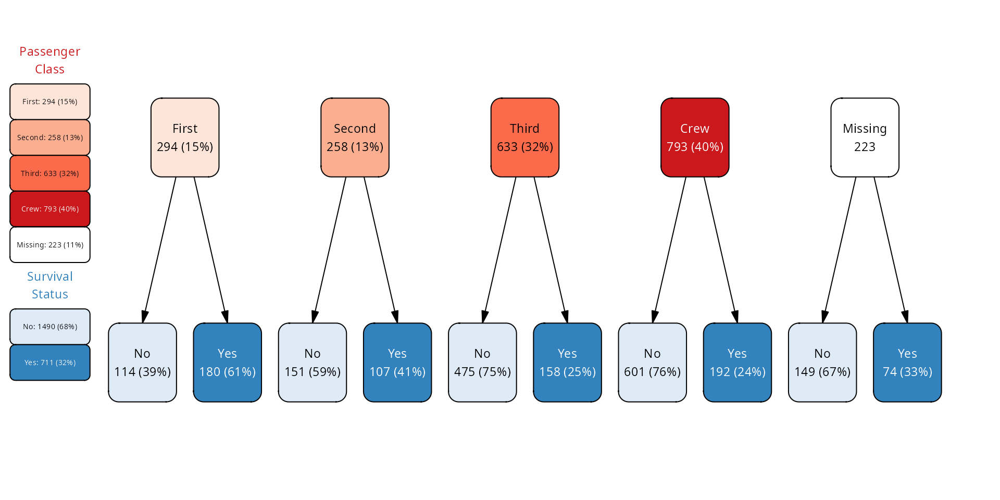
The special NAs name is used for all missing values,
regardless of the variable.
Unnecessary gory details:
-
add_labels()always creates new columnscol_aliasandval_aliasin the vtree object. - If no custom format is specified, these two columns will be
identical to the
node_nameandnode_valcolumns, respectively. - In addition, the alias information is stored in the
col_aliasandval_aliasattributes of the vtree object, which are subsequently used byplot()to create the legend.
Using custom formatting
Formatting can also be done with the
fmt/fmt_na parameters, which are R
expressions. You can use sprintf, glue, paste or whichever expressions
you like to construct a label from the following variables:
-
freq, the frequency for a node -
n, number of samples of a node -
node_col, name of the variable associated with a node -
node_name, display name of the variable associated with a node -
node_val, value of the variable associated with a node -
node_cv, same aspaste0(node_col, ':', node_val) - plus whatever new columns you have added to the vtree with mutate().
You can list the columns in the node data frame of a vtree object
with nodecols(vt) (or simply
colnames(as_tibble(vt))).
If provided, fmt_na is used to format the NA nodes.
Here is simple example using glue():
library(glue)
vt <- vtree(titanicNA, Class, Sex) |>
add_labels(fmt =
glue("{node_name}: {node_val}\nfreq={format(freq, digits=2)}"),
fmt_na =
glue("{node_name}: Missing\nfreq={format(freq, digits=2)}"))
plot(vt, var_labels = FALSE)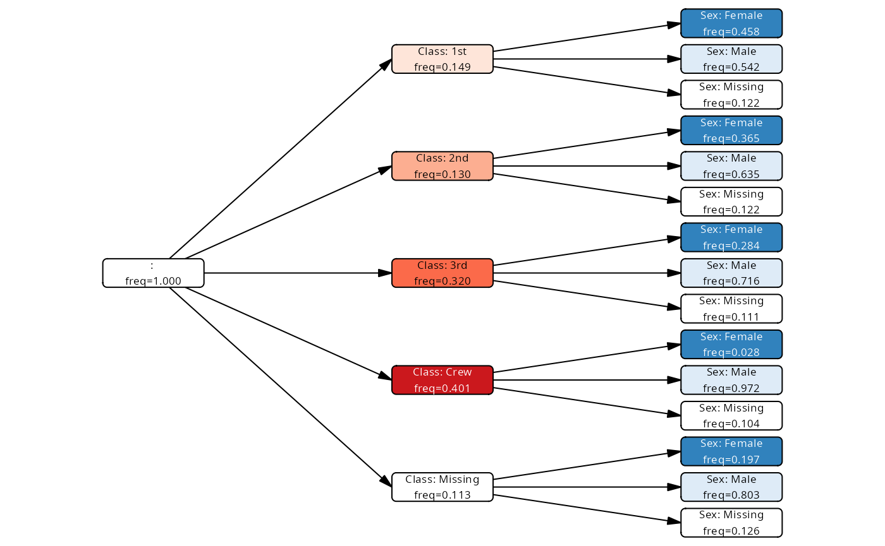
Note that the root node also got a label, but since
node_name and node_val are both “” for the
root, the label is not very informative. We can change it:
library(glue)
vt <- vtree(titanicNA, Class, Sex) |>
add_labels(fmt =
glue("{node_name}: {node_val}\nfreq={format(freq, digits=2)}\nn={n}"),
fmt_na =
glue("{node_name}: Missing\nfreq={format(freq, digits=2)}\nn={n}")) |>
mutate(label = ifelse(path == "root",
glue("All passengers\nn={n}"),
label))
plot(vt, var_labels = FALSE, dir="tb")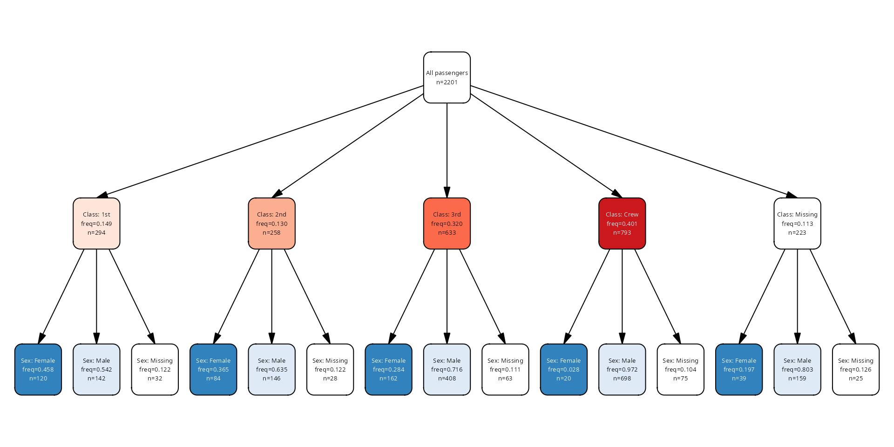
Using a mask
You can specify a mask with add_labels() - a logical
vector with the same length as the number of nodes - to indicate which
nodes should have their labels modified. For example, you may want a
different information for the leaf nodes as for other nodes:
vt <- vtree_from_freqtable(Titanic, Class, Sex, Survived) |>
retain(path == "Class:1st") # only keep the first class passengers
mask <- find_nodes(vt, leaf) # leaf is a logical vector
add_labels(vt, mask = mask, template = "long") |>
add_labels(mask = !mask, fmt = glue("{node_val}")) |>
plot(var_labels = FALSE, dir="tb", show_root = FALSE,
lwidth = 0.5, lheight = 0.5)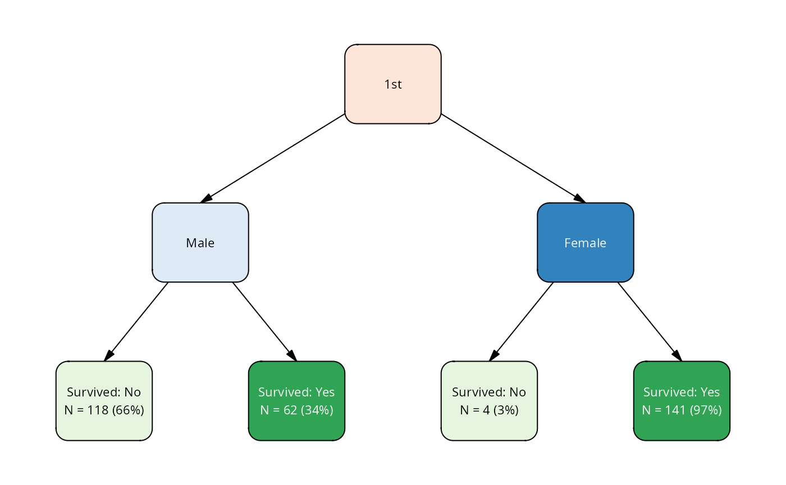
Plotting
Objects of type vtree can be directly plotted with the
plot() method. If the labels, colors and layouts are
missing, then plot adds some automatic defaults by running
vtree |> add_labels() |> add_colors() |> add_layout()
before plotting. Some of the arguments for these functions can be passed
directly to the plot() function.
Layouts
Currently, there are three layouts implemented: “regular”, “flushed” and “proportional”. The default layout is “regular”, which simply shows the tree structure with all nodes having the same sizes. The “flushed” layout is similar, but the nodes are always flushed to one side of the plot.
The proportional layout shows the nodes with sizes proportional to the number of observations in that node.
# the default column name for .freq_col is "Freq", same as in Titanic,
# so no need to specify it here
vt <- vtree_from_freqtable(Titanic, Class, Sex, Survived)
p1 <- plot(vt) # layout regular
p2 <- plot(vt, layout = "flushed")
p3 <- plot(vt, layout = "proportional")
plot_grid(p1, p2, p3, nrow = 1)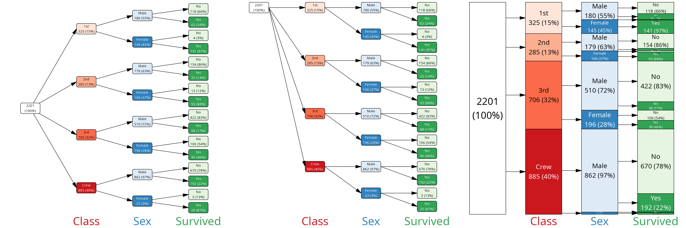
Layouts are added with the add_layout() function, which
you can call directly on the vtree object, resulting in a new vtree
object with additional columns for the layout.
With the layout_func argument, you can specify a custom
function to calculate the layout yourself. For example, this function
might call add_layout() first and then adjust the
calculated positions of the nodes in some way. See the documentation for
add_layout() for details.
Colors, fill colors and labels
Colors can be added with the add_palette() function and
then modified by directly manipulating the vtree object with
mutate(). Each node can have the fill and
color columns, corresponding to the fill color of the node
and the text color of the node label.
If fill is missing from the vtree object,
plot() will call add_palette() to assign fill
colors automatically. If color is missing, but
fill is present, then white or black will be chosen
automatically depending on the contrast with the fill color.
pal <- colorRampPalette(c("white", "steelblue"))(101)
p1 <- vt |>
mutate(fill = pal[round(freq * 100) + 1]) |>
plot()
p2 <- vt |>
mutate(abs_freq = n / max(n)) |>
mutate(fill = pal[round(abs_freq * 100) + 1]) |>
plot()
cowplot::plot_grid(p1, p2)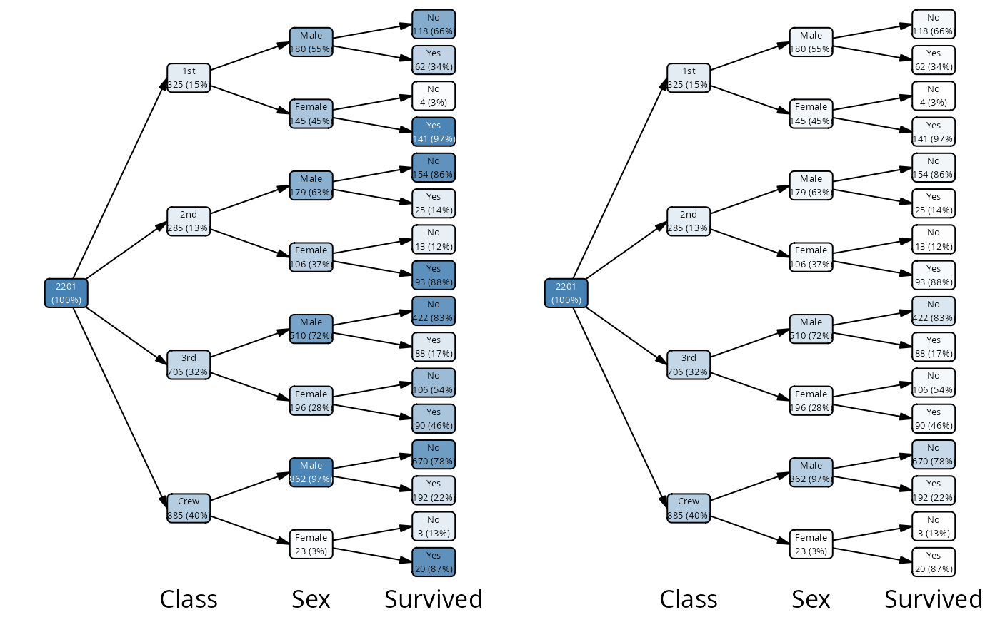
Colors can be also assigned automatically based on names of
RColorBrewer palettes. There is a default order of palettes for the
variables, but you can override it with the palettes
argument of plot() or add_palette().
Similarly, if the label column is missing from the vtree
object, plot() will call add_labels() (see
above) to assign labels automatically.
Legends with summaries
The legend shows a summary for each variable underneath or next to
the part of the tree which corresponds to this variable. Variable
summaries are calculated when vtree is constructed and stored in the
summary attribute of the vtree object. You can print them
with summary(vtree_object):
vt <- vtree_from_freqtable(Titanic, Class, Sex, Survived)
summary(vt)
#> # A tibble: 11 × 6
#> node_col node_val count freq denom label
#> <chr> <chr> <int> <dbl> <int> <chr>
#> 1 Class 1st 325 0.148 2201 1st: 325 (15%)
#> 2 Class 2nd 285 0.129 2201 2nd: 285 (13%)
#> 3 Class 3rd 706 0.321 2201 3rd: 706 (32%)
#> 4 Class Crew 885 0.402 2201 Crew: 885 (40%)
#> 5 Class NA 0 0 2201 Missing: 0
#> 6 Sex Male 1731 0.786 2201 Male: 1731 (79%)
#> 7 Sex Female 470 0.214 2201 Female: 470 (21%)
#> 8 Sex NA 0 0 2201 Missing: 0
#> 9 Survived No 1490 0.677 2201 No: 1490 (68%)
#> 10 Survived Yes 711 0.323 2201 Yes: 711 (32%)
#> 11 Survived NA 0 0 2201 Missing: 0The summaries will not change if you prune the tree, since they are tied to the data and not the tree structure:
mar <- c(0.05, 0.05, 0.33, 0.05)
p1 <- plot(vt, legend = TRUE, lwidth=.8, margins = mar)
p2 <- retain(vt, path == "Class:1st") |>
plot(legend = TRUE, lwidth=.8, margins = mar)
plot_grid(p1, p2, nrow = 1)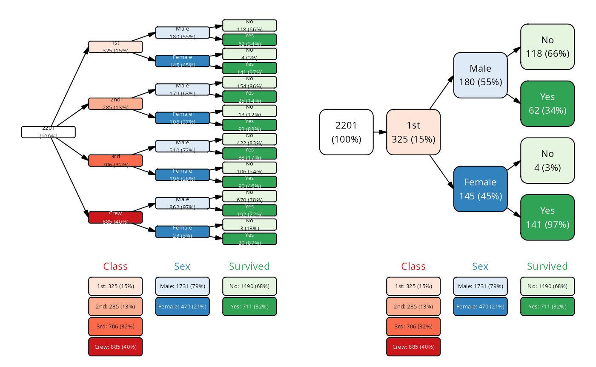
Other plot() arguments
lwidth, lheight - label
width and height relative to available space. The layout functions
calculate the available space for each node, and then these parameters
determine how much of that space is used for the label.
For the proportional layout, lheight is ignored, since
the height of the node is determined by the number of observations in
that node.
margins - a numeric vector of length 4,
specifying the top, right, bottom and left margins as fractions of the
total device space. So, for example, for 10% margins on all sides, use
margins = c(0.1, 0.1, 0.1, 0.1).
show_root - if TRUE (default), show the
root node (total population).
var_labels - if FALSE or NULL, no
variable legend is shown on the plot. If TRUE (default), the variable
names are shown. Alternatively, it can be used to specify custom
variable labels. In this case, it should be a named character vector,
where the names are the variable names and the values are the labels to
be displayed for those variables.
vt <- vtree_from_freqtable(Titanic, Class, Sex, Survived)
p1 <- plot(vt, var_labels = FALSE)
p2 <- plot(vt, var_labels = c(Class="Passenger\nClass", Sex="Gender",
Survived="Survival\nStatus"))
plot_grid(p1, p2)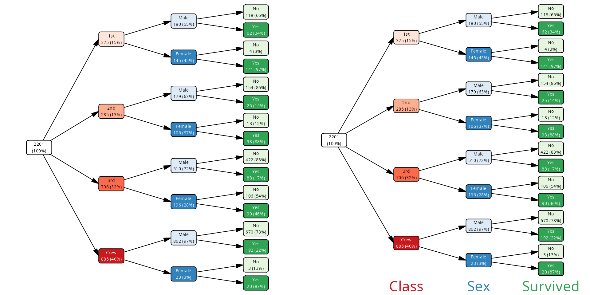
dir direction of the tree. One of “lr”
(left to right), “rl” (right to left), “tb” (top to bottom), “bt”
(bottom to top). Default is “lr”.
p1 <- plot(vt) # same as dir = "lr"
p2 <- plot(vt, dir = "tb")
p3 <- plot(vt, dir = "bt")
p4 <- plot(vt, dir = "rl")
plot_grid(p1, p2, p3, p4, nrow = 1)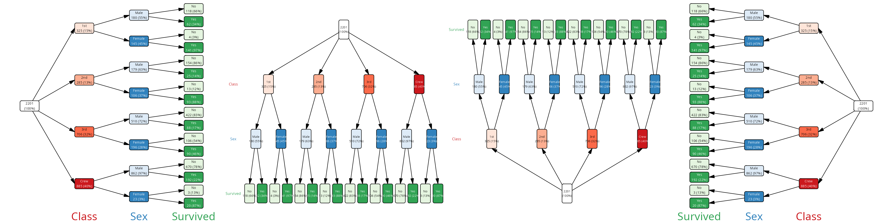
fontsizes Font sizes for the various
labels are automatically fit to the available space, but sometimes you
might manually adjust them. The fontsizes is a named list
with the following optional fields: * nodes: node labels
(default: “fixed” for regular layout, “adaptive” for proportional
layout) * var_labels: variable labels (default: “fixed”) *
legend_labels: for variable levels when
legend=TRUE (default: “fixed”)
Each element can be either a number, in which case the given font size is directly used, or either “fixed” or “adaptive”. When “fixed” is used, then optimal font size is calculated for all objects within the group, and then the minimal font size is used for all objects. When “adaptive” is used, then each object is fit separately, and the font sizes can be different for each object.
lwd line width for use with plotting.
Unfortunately, the default line width is not relative to the device
size, but is fixed to an absolute value; therefore, for small devices
the lines may appeary too thick.
Rich text labels
It is possible to use simple HTML or markdown formatting in the
labels and then use richtext=TRUE in the
plot() function to render the labels with the formatting.
The plot rendering is noticably slower, but it allows for more
flexibility in the label formatting.
cases <- as.data.frame(Titanic) |>
mutate(Class=gsub("(st|nd|rd)", "<sup>\\1</sup>", Class)) |>
mutate(Sex = gsub("Male", "**<span style='color:blue'>Male</span>**", Sex)) |>
cases_from_freqtable()
vt <- vtree(cases, Class, Sex, Survived)
plot(vt, richtext = TRUE, legend = TRUE)
vt <- vtree_from_freqtable(Titanic)
# we can use aliases through add_labels() to change the formatting of the
# variable names and values
cols <- list(Class = "**Class**", Sex = "**Sex**",
Age = "**Age**", Survived = "**Lived**")
vals <- list(Class = c("1st" = "1<sup>st</sup>", "2nd" = "2<sup>nd</sup>",
"3rd" = "3<sup>rd</sup>"),
Sex = c("Male" = "**<span style='color:blue'>Male</span>**",
"Female" = "**<span style='color:lightblue'>Female</span>**"))
vt <- add_labels(vt, col_alias = cols, val_alias = vals)
plot(vt, richtext = TRUE, legend = TRUE)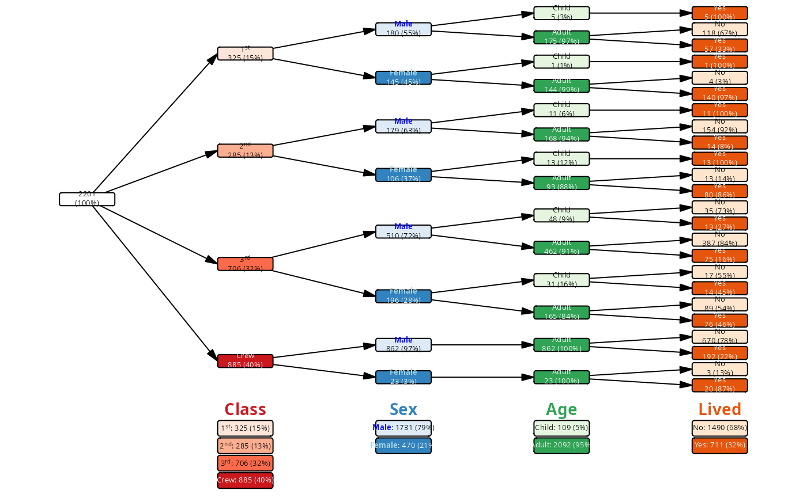
Inset plots
It is possible to add any kind of “grob” - graphical object - to the
nodes description. This includes not only bitmap images, but also
ggplot2 plots, which can be easily converted to a grob with
the function ggplot2::ggplotGrob().
The important thing to remember is that the inset graphics (1) must be a grob and (2) must be stored in a list-column of the vtree object called “grob”.
In the following example, we will download three images from Wikipedia corresponding to the three species of iris flowers from the famous Fisher data set. We will show on the vtree how many of each of the species have long petals, and we will illustrate the Species nodes with the corresponding images.
library(dplyr)
library(purrr)
iris_urls <- list(
versicolor="https://upload.wikimedia.org/wikipedia/commons/thumb/2/27/Blue_Flag%2C_Ottawa.jpg/500px-Blue_Flag%2C_Ottawa.jpg",
setosa="https://upload.wikimedia.org/wikipedia/commons/thumb/a/a7/Irissetosa1.jpg/500px-Irissetosa1.jpg",
virginica="https://upload.wikimedia.org/wikipedia/commons/thumb/f/f8/Iris_virginica_2.jpg/500px-Iris_virginica_2.jpg")
get_grob <- function(url) {
tf <- tempfile(fileext = ".jpg")
download.file(url, tf, mode="wb")
img <- jpeg::readJPEG(tf)
grid::rasterGrob(img)
}
iris_grobs <- lapply(iris_urls, get_grob)
vt <- iris |>
mutate(Long_Petals = as.character(Petal.Length > 4)) |>
vtree(Species, Long_Petals) |>
add_labels() |>
mutate(label = ifelse(leaf, label, paste0("Iris\n", node_val)))
vt <- vt |>
mutate(grob = map(pull(vt, "node_val"), ~ iris_grobs[[.x]]))
layout <- vt |>
add_palette(palettes = c("Greens", "Blues")) |>
add_layout(dir="tb", show_root=FALSE, lwidth=.9, lheight=.8,
varspace=c(Species=4,Long_Petals=1))
layout |>
plot(margins=c(.05, .05, .05, .2))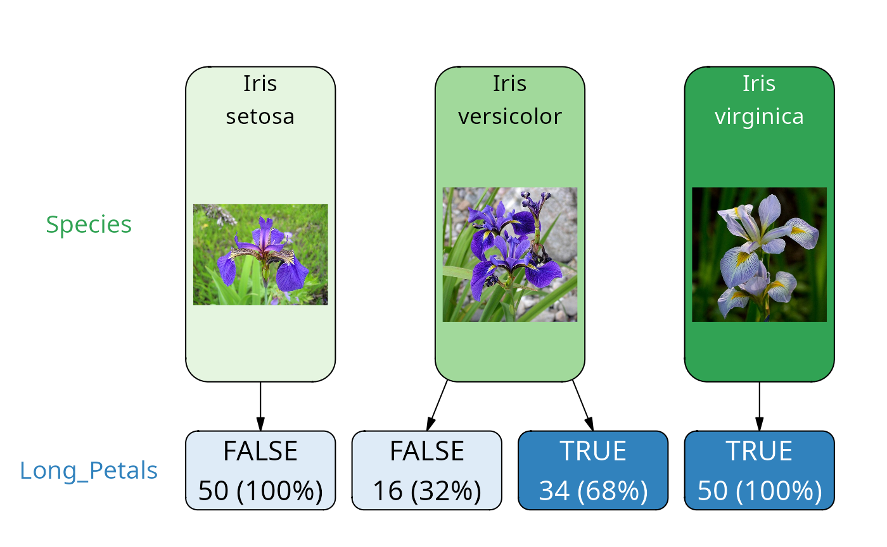
Here, we choose only the “Sex” and “Survived” nodes for the construction of the vtree. However, we make a ggplot object for each of the leaf nodes (“Survived:Yes” and “Survived:No”) and insert the resulting graphics object into the node.
For this, we create the grob column and convert the
ggplot2 to a grob with ggplot2::ggplotGrob(). The
grob column is a list-column, so we need to manipulate it
carefully. Also, we need to set an NA value for the non-leaf nodes.
# first, a tree with simplified labels on the leaf nodes
cases <- cases_from_freqtable(Titanic)
vt <- vtree(cases, Sex, Survived)
library(ggplot2)
# minimalistic ggplot showing how many passengers were in each class
# of the data frame df.
clasplot <- function(df) {
ggplot(df, aes(x = Class, fill = Class)) +
geom_bar() +
scale_fill_discrete(drop=FALSE) +
scale_x_discrete(drop=FALSE) +
ylim(0, max(table(cases$Class))) +
theme_minimal() +
# remove labels, legend and axes
theme(legend.position = "none",
axis.title = element_blank(),
axis.ticks = element_blank())
}
# use vtree_apply to produce plots
plots <- vtree_apply(cases, vt, FUN = clasplot)
grobs <- lapply(plots, ggplot2::ggplotGrob)
grobs[!pull(vt, leaf)] <- NA # plots only for the leaf nodes
# we add layout manually, so we can control it better
# this varspace arg means: reserve 4x as much space for the Survived nodes
# as for the Sex nodes
vt <- vt |>
add_layout(dir="tb", show_root=FALSE, lheight=.8,
varspace=c(Sex=1,Survived=4)) |>
mutate(shape = ifelse(leaf, "rectangle", "roundrectangle")) |>
mutate(grob = grobs)
plot(vt)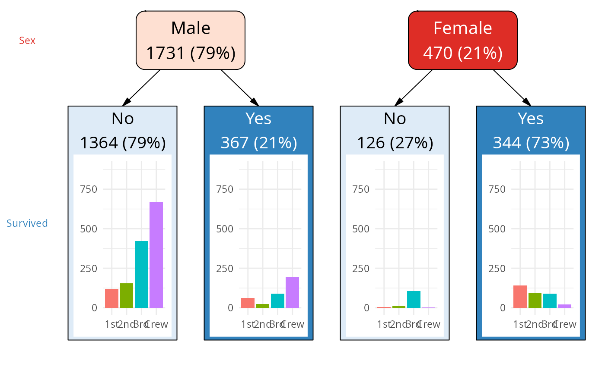